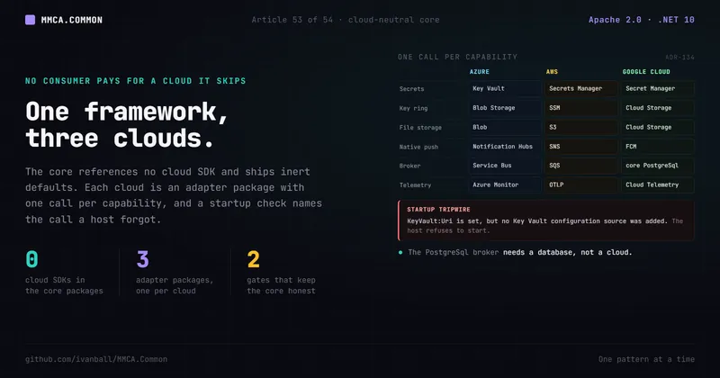

Run & extract · No. 53
One Framework, Three Clouds: A Cloud-Neutral Core With Vendor Adapter Packages

A framework that ships its first cloud's SDKs inside the core makes every consumer pay for that cloud, whether it runs there or not. Here is the alternative: a core that references no cloud SDK and ships inert defaults, one adapter package per cloud with one call per capability, a startup check that names the call a host forgot, and two gates that keep the core honest.
Your framework runs on Azure. It always has, so the Key Vault configuration source, the Blob storage
service, the Service Bus transport and the Azure Monitor exporter all live in the core packages, wired
by the same AddInfrastructure() and AddServiceDefaults() every host already calls. It is convenient
right up to the first consumer that does not run on Azure.
That consumer restores the Azure SDKs anyway. Its vulnerability audit reads their advisories, its container image ships their assemblies, and its test projects pull a Service Bus emulator stack it will never start. When it asks for a broker its cloud actually offers, the answer is an edit to the core, because the provider list is a closed enum somebody has to widen.
And the obvious fix, "add the second cloud next to the first", makes it worse: then every consumer carries two clouds.
The move that works is the one the framework already made for language models (ADR-120): keep vendor code in its own package, let the host opt in by name, and refuse to start when the name has no registration. ADR-134 applies that shape to the cloud.
Why it matters
Three rubric categories read this from three directions.
§7 (Microservices Readiness) is a weight-3 category (ArchitectureEvaluationCriteria.md:272) that asks
for an Anti-Corruption Layer around "any legacy or third-party model at the boundary" (:263) and lists
"a legacy or vendor model leaking into the domain because no translation layer sits at the boundary" as
a red flag (:270). A cloud SDK type in a core package is exactly that leak, one layer down.
§10 (Messaging and Integration Architecture, :329) scores how work crosses process boundaries, and
the transport is where a cloud choice bites first: a broker list that only the core can extend is a
broker list frozen at whatever clouds the core's authors used.
§32 (Dependency and Supply-Chain Management, :843) asks for "transitive dependencies reviewed"
(:852) and names "unaudited transitive dependencies" as a red flag (:859), at weight 3 for a
published framework (:861). Every SDK a consumer restores and never calls is a transitive dependency
somebody has to audit for nothing.
MMCA.Common scores §7 at Maturity 4 / Implementation 9, §10 at Maturity 4 / Implementation 8 and §32 at
Maturity 4 / Implementation 9 (common-ArchitectureScorecard.md:71, :74, :96; evidence as of
2026-10-29 at v1.265.1, :5). The cloud boundary is one of the reasons those rows hold.
The MMCA answer: the core references no cloud SDK
The decision is one sentence: the core packages reference no cloud SDK; each vendor integration ships
in an adapter package that references the core, and a host opts in with one registration call per
capability (ADR-134:44-47).
The core ships the abstractions and an inert or neutral default for each. Native push and file storage
default to Null* implementations that an adapter call replaces: the null storage service fails each
upload with FileStorage.NotConfigured rather than pretending to succeed (CloudAdapterTripwire.cs:22-26).
The message bus defaults to in-process dispatch (MessageBusSettings.cs:25). Telemetry export is OTLP,
switched on by AddServiceDefaults() only when OTEL_EXPORTER_OTLP_ENDPOINT is set
(Extensions.Telemetry.cs:165-170), which is the one exporter no cloud owns.
Then three adapter packages, one per cloud. Their calls stay inert until configuration or selection
asks for them, though not all in the same way. A service call such as AddAzureBlobFileStorage is a
no-op while its section is incomplete (AzureServiceCollectionExtensions.cs:36-37). A transport call
always registers its transport, which stays unused unless MessageBus:Provider selects it (:114-118).
And every host-level call leaves its tripwire marker whether or not its gate key is set, while the
exporters throw when they run before AddServiceDefaults() regardless of configuration
(AzureMonitorExporterExtensions.cs:44-56):
| Capability | MMCA.Common.Azure |
MMCA.Common.Aws |
MMCA.Common.Gcp |
|---|---|---|---|
| Secrets as configuration | AddAzureKeyVaultConfiguration() |
AddAwsSecretsManagerConfiguration() |
AddGoogleSecretManagerConfiguration() |
| DataProtection key ring | AddAzureDataProtection() |
AddAwsDataProtection() |
AddGoogleCloudDataProtection() |
| File storage | AddAzureBlobFileStorage(configuration) |
AddS3FileStorage(configuration) |
AddGoogleCloudStorage(configuration) |
| Native push | AddAzureNotificationHubsPush(configuration) |
AddAmazonSnsPush(configuration) |
AddFirebaseCloudMessagingPush(configuration) |
| Broker transport | AddAzureServiceBusTransport() |
AddAmazonSqsTransport() |
none (the built-in PostgreSql provider) |
| Passwordless database | the Entra SQL provider, by package reference | AddAwsRdsIamAuthentication(configuration) |
AddCloudSqlIamAuthentication(configuration) |
| Telemetry exporter | AddAzureMonitorExporter() |
none (OTLP) | AddGoogleCloudTelemetryExporter() |
Every call in the table is a real method (anchors in the Notes). Two shapes repeat: the host-level
calls (configuration source, key ring, telemetry exporter) extend the host builder (TBuilder, for
example AzureKeyVaultConfigurationExtensions.cs:80, AzureDataProtectionExtensions.cs:53,
AwsDataProtectionExtensions.cs:57 and GoogleCloudDataProtectionExtensions.cs:76), and the
service-level calls extend IServiceCollection (for example AzureServiceCollectionExtensions.cs:41).
Each adapter binds the framework's standard configuration sections and keys (ADR-134:108-113), so a
deployment's environment variables and vault names are the same whichever adapter call reads them.
MMCA.Common.Testing.Azure is the fourth adapter, for tests: the Service Bus emulator fixture lives
there, so a test project that never touches Service Bus never restores its emulator stack
(ADR-134:105-107).
The broker is a string, and the core owns the cloud-neutral one
The transport selection is where a closed list hurts most, so it is the part that opened furthest.
MessageBusSettings.Provider is a string defaulting to InProcess (MessageBusSettings.cs:25).
The built-in values are three constants on MessageBusProviders (MessageBusProviders.cs:10):
InProcess (:16), RabbitMq (:19) and PostgreSql (:27), compared case-insensitively (:4-8).
Any other value names a transport an adapter registered.
The extension point is IBrokerTransport: a Name the configuration selects it by, and one
Configure(IBusRegistrationConfigurator, BrokerTransportContext) that issues the Using{Transport} call
and applies the shared receive policies (IBrokerTransport.cs:25, :31, :41). An adapter registers
one through AddBrokerTransport (DependencyInjection.Messaging.cs:159), which adds it as an
enumerable singleton (:168). The whole Azure adapter call is that registration:
// MMCA.Common.Azure/AzureServiceCollectionExtensions.cs:117-118 (verbatim)
public IServiceCollection AddAzureServiceBusTransport() =>
services.AddBrokerTransport(new AzureServiceBusTransport());
// MMCA.Common.Aws/AwsServiceCollectionExtensions.cs:85-86 (verbatim)
public IServiceCollection AddAmazonSqsTransport() =>
services.AddBrokerTransport(new AmazonSqsTransport());AddBrokerMessaging (DependencyInjection.Messaging.cs:48) returns early for InProcess (:57),
otherwise resolves the transport by name before it registers MassTransit, so an unknown name leaves no
half-registered bus behind (:67-69), and hands it the bus configurator (:109). Resolution checks the
two built-ins first and then the adapter registrations (ResolveBrokerTransport, :188). A name that
matches nothing throws, and the message is actionable: for AzureServiceBus and AmazonSqs it names
the package to reference and the call to make before AddBrokerMessaging (MessageBusProviders.cs:34-39,
DependencyInjection.Messaging.cs:215-220); for any other name it says to register an IBrokerTransport
under it or correct the spelling (:217).
Why is PostgreSql in the core rather than in the Google adapter? Because it needs a database, not a
cloud. PostgreSqlBrokerTransport (PostgreSqlBrokerTransport.cs:40, Name at :43) runs
MassTransit's SQL transport, which keeps queues, topics and scheduled messages in tables of one
PostgreSQL database, so Cloud SQL, Amazon RDS, Azure Database for PostgreSQL or a container is the
broker (:10-14). Putting it in MMCA.Common.Gcp would make an AWS or self-hosted consumer reference
the Google adapter to use a broker that has nothing to do with Google (ADR-134:342-345). It is also
Google Cloud's broker answer, since there is no MassTransit v8 Pub/Sub transport (ADR-134:134-139).
Whichever transport runs, retry, redelivery and backpressure come from the same policy code:
BrokerTransportPolicies is applied by every transport, built in or adapter (ADR-134:129-133). The
inputs still differ per transport: SQS substitutes its own [60, 300, 900] redelivery default when none
is configured (AmazonSqsTransport.cs:22-25, :55), and RabbitMQ applies delayed redelivery only when
EnableDelayedRedelivery is set (RabbitMqBrokerTransport.cs:33).
Passwordless PostgreSQL through one hook
Both IAM adapters that target PostgreSQL go through the same core extension point rather than each
inventing a connection path. INpgsqlDataSourceConfigurator has one method,
Configure(NpgsqlDataSourceBuilder) (INpgsqlDataSourceConfigurator.cs:23, :27), registered through
AddNpgsqlDataSourceConfigurator as an enumerable (DependencyInjection.Persistence.cs:24, :28),
which builds one shared NpgsqlDataSource per connection string (:32-34). With none registered the
contexts get the raw connection string and no data source is built (INpgsqlDataSourceConfigurator.cs:12-13).
RdsIamAuthenticationConfigurator refreshes its token every 10 minutes
(RdsIamAuthenticationConfigurator.cs:20, :24) and CloudSqlIamAuthenticationConfigurator every
minute (CloudSqlIamAuthenticationConfigurator.cs:23, :26). Because the PostgreSql broker runs on
the same shared data source, an IAM configurator covers the broker's connections too
(PostgreSqlBrokerTransport.cs:29-33).
Silent degradation is the failure the tripwires remove
An opt-in adapter call has one failure mode of its own. A host that has the configuration but not the
adapter call would start cleanly with every vault secret missing, or with no telemetry
export, and look healthy while doing it (HostIntegrationTripwire.cs:6-11). The framework turns that
into a startup failure.
HostIntegrationTripwire (HostIntegrationTripwire.cs:15) is an IValidateOptions registered by
AddServiceDefaults() under ValidateOnStart (Extensions.cs:44-46), so it runs before any hosted
service starts. It holds one gate key per host-level adapter call:
- Azure:
APPLICATIONINSIGHTS_CONNECTION_STRING(:20),KeyVault:Uri(:23) andDataProtection:BlobStorageUri(:26). - AWS:
SecretsManager:NamePrefix(:29) andDataProtection:SsmParameterPrefix(:32). - Google Cloud:
GoogleSecretManager:NamePrefix(:40),DataProtection:GcsObjectUri(:43) andGoogleCloudTelemetry:ProjectId(:46).
Each adapter call leaves a receipt behind, a HostIntegrationMarker singleton
(HostIntegrationMarker.cs:10; for example AzureMonitorExporterExtensions.cs:56), and the tripwire
fails any gate key that is set with no matching receipt (HostIntegrationTripwire.cs:117-123). A key
holding only whitespace counts as unset (:125). The message names the package and the call. A host
with a vault URI and no vault call fails with:
KeyVault:Uri is set, but no Key Vault configuration source was added, so every secret the vault holds
is missing from configuration. Reference MMCA.Common.Azure and call
builder.AddAzureKeyVaultConfiguration() early in Program.cs.(The format is "{key} is set, but {consequence}.", :121, with the consequence at :71.) The same
validator refuses a host that sets more than one of the three key-ring gates, because two configured
rings are a split ring, not a stronger one: whichever registration runs last owns the repository, and
replicas that disagree mint cookies the others cannot decrypt (:49-54, :104-112).
The service-level twin is CloudAdapterTripwire (CloudAdapterTripwire.cs:30), registered by
AddInfrastructure (DependencyInjection.cs:221-223). It fails NativePush:Enabled=true when
INativePushSender is still the null default (CloudAdapterTripwire.cs:33, :48-50), naming the call
of each of the three push adapters (:53). File storage deliberately has no check: a tripwire must
fire on a key that declares intent, and a FileStorage section is routinely shared across every service
of a solution, including the ones that never store files (:22-26).
Order matters in two places, and both fail loudly. AddAzureMonitorExporter() throws when it runs
before AddServiceDefaults(), because the outbox-poll and probe filter processors must be registered
ahead of the exporter's batch processor (AzureMonitorExporterExtensions.cs:44-52), and
AddGoogleCloudTelemetryExporter() carries the same guard (GoogleCloudTelemetryExporterExtensions.cs:105-110).
An adapter transport must be registered before AddBrokerMessaging resolves it
(DependencyInjection.Messaging.cs:150-155).
The boundary is gated twice
A rule that lives in a guideline erodes the first time an SDK is one dotnet add package away. This
one is held by two gates that look at different evidence.
At build time, the EnforceCloudVendorBoundary target (MMCA.Common.LayerEnforcement.targets:130)
runs in every MMCA.Common source project except the four adapters: the targets file is imported only
for a project under Source whose name starts with MMCA.Common (MMCA.Common/Directory.Build.props:148-149),
and the target skips the adapters (:128), so test and consumer projects are outside it. It fails a PackageReference
whose id starts with Azure., Microsoft.Azure., AWSSDK., Google. or FirebaseAdmin, equals
Grpc.Auth, is a vendor MassTransit transport, or carries an .Azure segment (:138-147), and it
fails a ProjectReference naming an adapter project (:148-149), each with its own error (:151, :153).
At test time, CloudVendorIsolationTestsBase (CloudVendorIsolationTestsBase.cs:15) judges the
compiled assemblies instead of the declared references, so a vendor type that arrives transitively is
caught too (:9-12). A subclass names the assemblies that must stay neutral (:18) and any engine
allowance (:24-25), and inherits two facts: no vendor type named (:27-29) and no vendor or adapter
assembly referenced (:31-33). The rule bodies match the namespace roots Azure, Microsoft.Azure,
Amazon, Google, FirebaseAdmin and Grpc.Auth, the two vendor transports and the four adapters
(ArchitectureRules.CloudVendors.cs:25-41), plus the matching assembly prefixes (:48-62).
One detail in that list is worth copying for its own sake: the namespace roots carry no trailing dot,
because NetArchTest matches whole namespace segments and an entry ending in a dot matches nothing, which
would make the type-level rule pass vacuously (:27-28). A fitness test that cannot fail is worse than
no test, because it reads as coverage.
The build gate exempts exactly two references, and both are database engines rather than cloud
services: Microsoft.EntityFrameworkCore.Cosmos in Infrastructure, because Cosmos DB is one of the four
EF engines and brings Microsoft.Azure.Cosmos with it, and Aspire.Hosting.Azure.CosmosDB in
Aspire.Hosting, the AppHost-side emulator resource that never reaches a service process
(MMCA.Common.LayerEnforcement.targets:117-124, exemptions at :134-135). The test gate in
MMCA.Common's own architecture tests carries one allowance, Microsoft.Azure.Cosmos in Infrastructure
(Tests/Architecture/MMCA.Common.Architecture.Tests/Layering/CloudVendorIsolationTests.cs:31), and
Aspire.Hosting is not among the assemblies it holds (:19-26), so the AppHost-side exemption belongs to
the build gate alone.
How ADC and Store adopt it
Both consumers run on Azure, so the adoption is a set of Azure calls in each host's Program.cs, in a
fixed order. ADC's Identity service shows every host-level call and two service-level ones (condensed,
comments shortened):
// MMCA.ADC/Source/Services/MMCA.ADC.Identity.Service/Program.cs (condensed)
builder.AddAzureKeyVaultConfiguration(); // :112, BEFORE AddServiceDefaults(), which reads configuration eagerly
builder.AddServiceDefaults(); // :114, registers the HostIntegrationTripwire
builder.AddAzureMonitorExporter(); // :119, AFTER service defaults; no-op without the connection string
builder.AddAzureDataProtection(); // :127, shared key ring; no-op without DataProtection:BlobStorageUri
services.AddAzureBlobFileStorage(builder.Configuration); // :261, no-op unless FileStorage is complete
// Registration only: production sets MessageBus:Provider=AzureServiceBus.
services.AddAzureServiceBusTransport(); // :339, BEFORE AddBrokerMessaging
services.AddMmcaApplicationPipeline(pipeline => pipeline
.Register(moduleHost.RegisterModules)
.Register(s => s.AddBrokerMessaging(builder.Configuration, x => { /* consumers */ }))); // :340, :345The provider string itself comes from the deployment, not the code: ADC's container apps carry
MessageBus__Provider = AzureServiceBus (MMCA.ADC/infra/main.bicep:1980), and Store's do the same
(MMCA.Store/infra/main.bicep:1608). The comment at the transport call says what that buys: a RabbitMQ
or in-process run is unaffected by the registration (Program.cs:336-338).
The other ADC hosts follow the same lines: Conference (MMCA.ADC.Conference.Service/Program.cs:115,
:117, :122, Blob storage :367, transport :428), Engagement (:96, :98, :103, transport
:298), Notification (:99, :101, :106, transport :238), the Gateway (:68, :70, :75) and
the web UI host with its key ring (MMCA.ADC.UI.Web/Program.cs:63, :65, :70, :72). Native push is
a module call, not a host one: the Notification module's AddNotificationModule calls
AddAzureNotificationHubsPush(configuration), safe in every environment because it is a no-op until the
NativePush section is enabled and complete (MMCA.ADC.Notification.API/DependencyInjection.cs:37-40).
Store's shape is the same with fewer capabilities: every service and the Gateway call
AddAzureKeyVaultConfiguration(), AddServiceDefaults() and AddAzureMonitorExporter() in that order
(Sales MMCA.Store.Sales.Service/Program.cs:64, :90, :95), the three broker services register
AddAzureServiceBusTransport() ahead of AddBrokerMessaging (Sales :247/:269, Identity :254/:264,
Catalog :266/:279), and the web UI host adds the key ring (MMCA.Store.UI.Web/Program.cs:76).
Neither consumer calls an AWS or Google method, and neither restores those packages. That is the point.
Trade-offs, honestly
- Every Azure host carries more calls. The exporter, the transport, the key ring and the vault
source are explicit lines in each
Program.cs, andMMCA.Common/UPGRADING.mdlists the calls a host makes (ADR-134:274-276,:348-352). The tripwire is what keeps a forgotten line from being a silent regression. - Registration order matters, twice. Exporter after
AddServiceDefaults(), transport beforeAddBrokerMessaging. Both fail at startup with the fix in the message, which is the best an order dependency can do, but it is still an order dependency. - The core is cloud-neutral in its cloud services, not free of every Azure assembly. The Cosmos
engine brings
Microsoft.Azure.Cosmostransitively, and both gates name that exemption explicitly (MMCA.Common.LayerEnforcement.targets:119-122,CloudVendorIsolationTests.cs:31). A third exemption is a deliberate edit to both gates. - Every consumer restores the SQL transport. The built-in
PostgreSqlprovider lives in Infrastructure, so its MassTransit SQL transport is restored whichever broker a host selects (ADR-134:290-292). - An IAM-only broker database cannot migrate at startup. MassTransit's migrator opens its own
connections from the connection string, so such a host sets
MessageBus:PostgreSql:MigrateOnStartup=falseand creates the transport schema in a deployment step that connects with a password (PostgreSqlBrokerTransport.cs:33-37). - Clouds are not interchangeable at the edges. SQS caps a message delay at 900 seconds
(
AmazonSqsTransport.cs:43). WithMessageBus:RedeliveryIntervalsSecondsunconfigured, the SQS transport substitutes[60, 300, 900](:22-25,:55) for a framework default that reaches an hour (MessageBusSettings.cs:217); only an explicitly configured interval above 900 seconds fails, rather than being silently shortened (:161). Google Cloud metrics need the Google-built OpenTelemetry Collector, because the Telemetry API takes at most 200 data points per metric request and the .NET SDK cannot split one metric (GoogleCloudTelemetryExporterExtensions.cs:78-86). - The AWS and Google tiers are not merge gates. The live-broker CI coverage is the built-in
PostgreSqltransport and SQS/SNS against LocalStack, neither a required check, and no CI job runs a live Azure Service Bus (common-ArchitectureScorecard.md:74). The adapters a consumer deploys today are the ones exercised least against real infrastructure.
Apply this even without MMCA
The pattern ports to any framework, internal platform or shared library that more than one deployment consumes. Six steps:
- Draw the line at the package, not the namespace. A vendor SDK in a core package is a dependency of every consumer, whatever namespace hides it. One adapter package per vendor, referencing the core, never the reverse.
- Ship an inert or neutral default for every capability. A null push sender, a storage service that fails each call with a named error, in-process messaging, OTLP telemetry. The core must run, and fail understandably, with no adapter at all.
- One call per capability, a no-op until configured. A host that calls the method in every
environment keeps one
Program.cs; the configuration decides what is live. Keep the configuration keys stable across the move so deployments do not change. - Make selection open. A provider name as a string resolved against registered implementations, not an enum. Fail at registration when the name matches nothing, and put the package and the call in the message for the names you know.
- Fail startup on intent without implementation. For each configuration key that declares "this host uses vendor X", have the adapter call leave a marker and check the pair at startup. Check only keys that declare intent; a shared section that every service sees is not one.
- Gate it twice, and test the gate. A build check on declared package ids and an architecture test on compiled assemblies catch different leaks. Then pin each rule with a case that must fail, because a rule that matches nothing passes forever.
The rule of thumb: a consumer should pay only for the cloud it runs on, and a host that forgot its adapter should not start.
What we covered: why cloud SDKs in a core package tax every consumer, how ADR-134 splits the
framework into a cloud-neutral core with inert defaults and three adapter packages with one call per
capability, why the broker provider is an open string resolved against IBrokerTransport
registrations and why the database-only PostgreSql broker belongs in the core, how passwordless
PostgreSQL goes through one INpgsqlDataSourceConfigurator hook, how HostIntegrationTripwire and
CloudAdapterTripwire turn a missing adapter call into a startup error that names it, how
EnforceCloudVendorBoundary and CloudVendorIsolationTestsBase hold the boundary at build and test
time, and how ADC and Store wire the Azure adapter host by host.
MMCA.Common is open source. Star the repo, read the 2-minute ADR-134 behind this pattern, or
dotnet add package MMCA.Common.API and build the monolith you can extract later.
- Repo: https://github.com/ivanball/MMCA.Common
- This pattern's decision record: ADR-134: Cloud-Neutral Core With Vendor Adapter Packages
- The full 34-category scorecard, §7, §10 and §32 included, lives in MMCA.Common: Architecture Scorecard in the docs site.
Previous: Article 52, "Finishing identity: second factor, email confirmation and stored permission grants." Next in the series: Article 54, the series index.
Tags: .NET, C Sharp, Cloud Computing, Microservices, Software Architecture